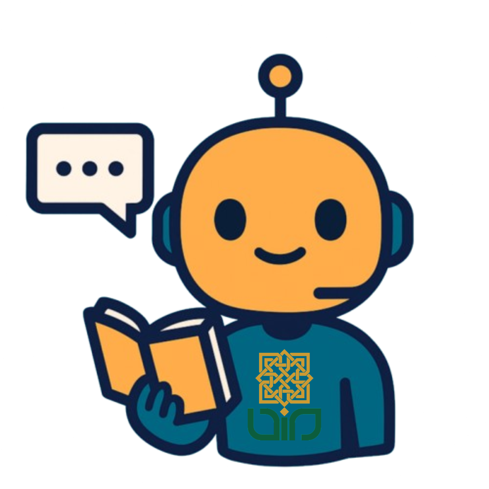

Halo, 211060500461 Selamat datang di Chatbot Akademik.

Tentang
Chatbot Akademik UIN Sunan Kalijaga adalah asisten virtual yang dirancang untuk membantu mahasiswa mendapatkan informasi akademik secara cepat dan mudah. Dengan teknologi AI terbaru, chatbot ini siap menjawab berbagai pertanyaan seputar jadwal kuliah, beasiswa, prosedur administrasi, dan banyak lagi.
Fitur
Informasi Akademik
Dapatkan berbagai informasi akademik seperti kalender akademik, pengumuman, dan regulasi kampus.
Jadwal Ujian
Informasi jadwal ujian tengah semester, akhir semester, serta lokasi ujian.
Jadwal Kuliah
Informasi jadwal kuliah harian dan lokasi kelas secara real-time.
Informasi Beasiswa
Data beasiswa, persyaratan, dan periode pendaftaran.
Pengumuman Kampus
Update pengumuman dan kegiatan kampus terkini.
FAQ
Bagaimana cara menggunakan chatbot ini?
Anda cukup mengetikkan pertanyaan seputar informasi akademik di kolom chat, lalu chatbot akan memberikan jawaban secara otomatis. Anda bisa mengakses chatbot melalui halaman Chat di menu navigasi.
Apakah chatbot ini bisa diakses kapan saja?
Ya, chatbot ini tersedia 24 jam sehari, 7 hari seminggu untuk membantu Anda kapan saja. Anda bisa mengaksesnya dari perangkat apapun yang terhubung ke internet.
Apakah data saya aman saat menggunakan chatbot?
Kami menjaga privasi dan keamanan data Anda sesuai dengan kebijakan kampus dan standar keamanan data. Seluruh percakapan Anda dienkripsi dan disimpan dengan aman.
Bagaimana jika chatbot tidak bisa menjawab pertanyaan saya?
Anda dapat menghubungi bagian administrasi kampus melalui form kontak yang tersedia di halaman ini. Tim kami akan membantu menjawab pertanyaan Anda sesegera mungkin.
Apakah chatbot ini gratis digunakan?
Ya, layanan chatbot ini disediakan gratis untuk seluruh mahasiswa UIN Sunan Kalijaga. Tidak ada biaya apapun yang dikenakan untuk mengakses dan menggunakan fitur-fitur yang tersedia.